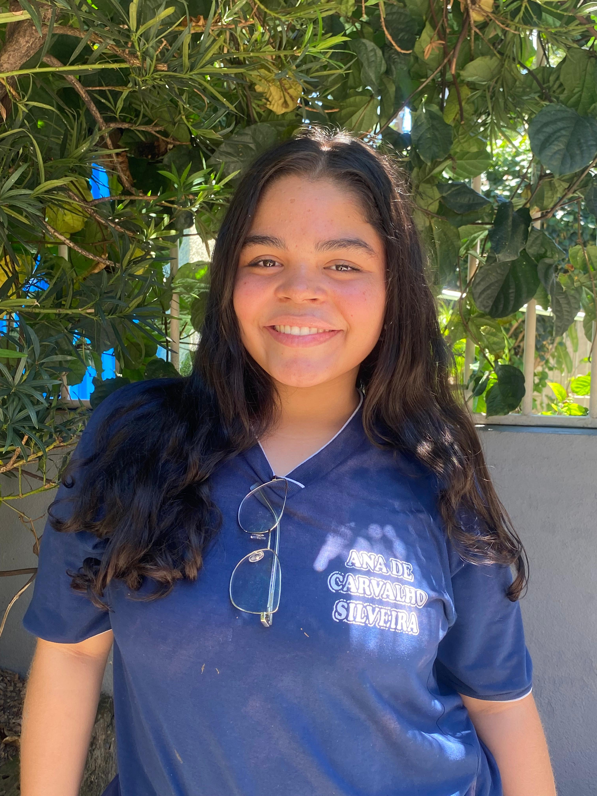

título

No curso, Ana Beatriz aprendeu de todo um pouco,sua maior dificuldade é arduíno,sua maior facilidade é HTML, casa. Para Ana Beatriz oque ela mais gosta é HTML css, o curso pode influenciar em sua vida como forma de conseguir seu primeiro emprego,ela não pretende segur a carreira, seu melhor momento foi fazer seu primeiro site, ela se orgulha de ter aprendido HTML css, ela prefere entender o impacto que a tecnologia tem na sociedade, já teve medo de não conseguir acompanhar a turma. Seu concelho é: mesmo que seja difícil vc consegue. Ajudou a conhecer mais sobre a tecnologia.
Descrição do portifolio